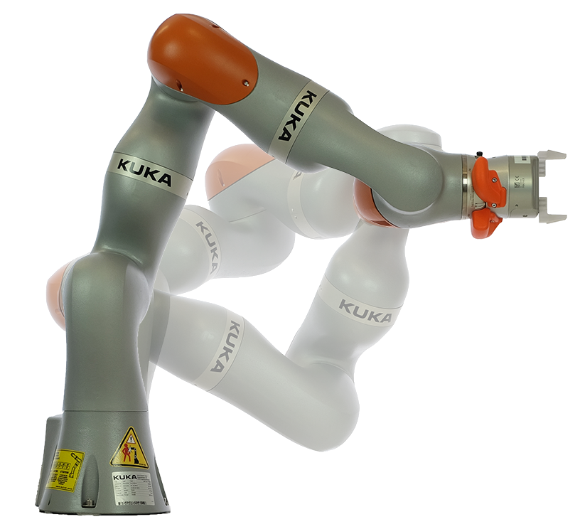
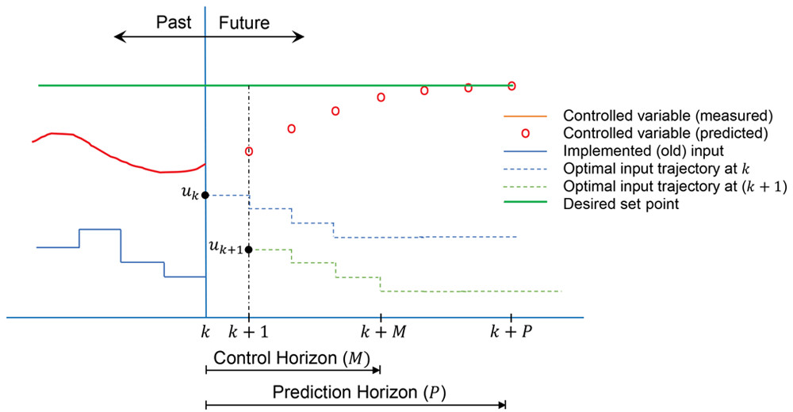
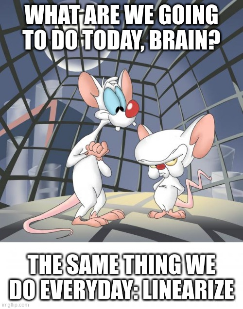
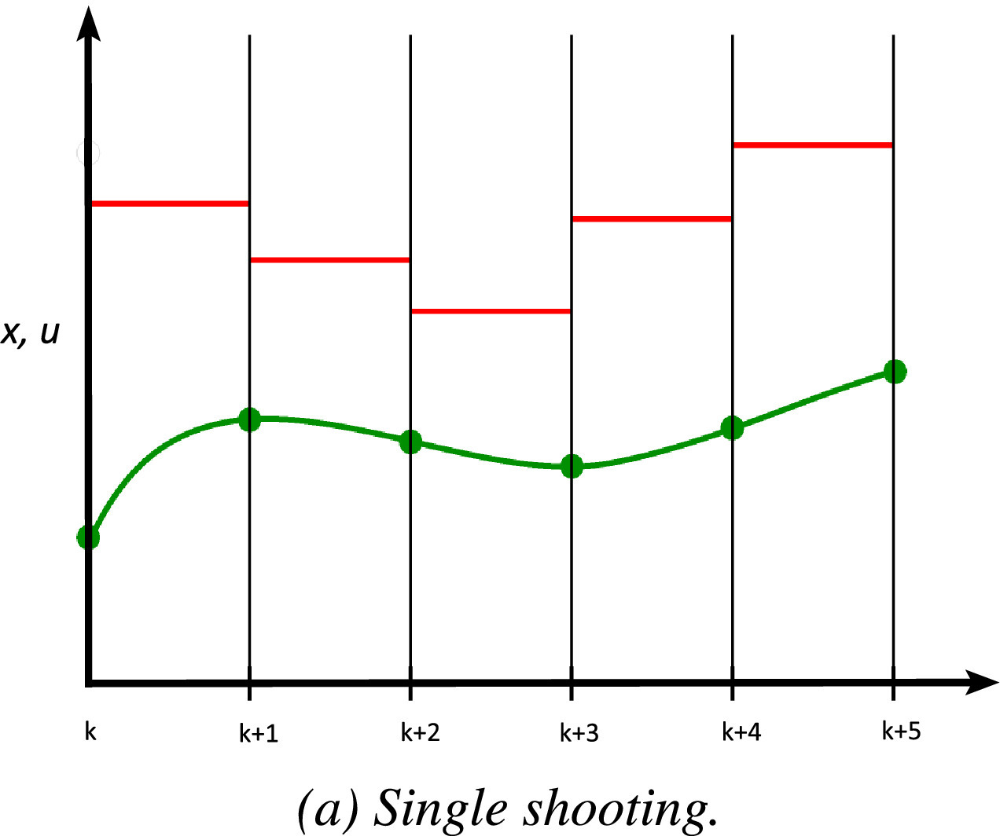
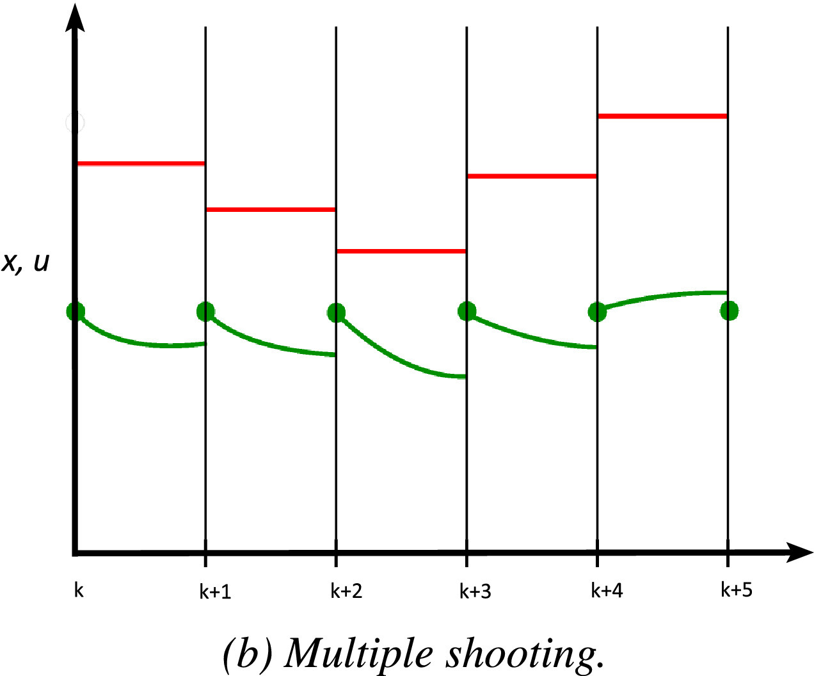

Università di Pisa
$$
% Partial derivative% Transpose symbol with \newcommand*{@T}[2]{% % #1: math style % #2: unused % } $$
Problem: satisfy a set of tasks that cannot be satisfied concurrently.
E.g., maintain an end-effector pose, avoid obstacles, and minimize energy consumption.
Solution: a tradeoff needs to be made among the tasks.
Two approaches can be adopted:
Weighted Approach
Hierarchical Approach
Techniques to deal with redundancy:

A general Quadratic Programming (QP) optimization problem is \[ \begin{aligned} \min_{x} \quad & \frac{1}{2}x^{T} Q x + p^T x \\ \textrm{s.t.} \quad & A x - b = 0 \\ & C x - d \leq 0. \end{aligned} \]
QP problems are:
Consider a set of tasks \(T_p\) with \(p = 1, \dots, n_p\) in the general form \[ T_p = \left\lbrace \begin{matrix} A_p x - b_p = v_p \\ C_p x - d_p \leq w_p \end{matrix} \right. \]
where \(v_p\) and \(w_p\) are slack variables to be minimized. If the task is feasible, \(v_p = 0\) and \(w_p = 0\).
If the task has no equality (inequality) constraints, \(A_p\) (\(C_p\)) has zero rows and \(n_x\) columns and \(b_p\) (\(d_p\)) has zero elements.
A single task \(T\) is formulated as the following optimization problem \[ \begin{aligned} \min_{x, v, w} \quad & \left\lVert v \right\rVert^2 + \left\lVert w \right\rVert^2 \\ \textrm{s.t.} \quad & A x - b = v, \\ & C x - d \leq w. \end{aligned} \]
A single task \(T\) is formulated as the following optimization problem \[ \begin{aligned} \min_{x, w} \quad & \left\lVert Ax - b \right\rVert^2 + \left\lVert w \right\rVert^2 \\ \textrm{s.t.} \quad & C x - d \leq w. \end{aligned} \]
The previous optimization problem is then cast as a QP problem in the standard form as \[ \begin{aligned} \min_{\xi = \begin{bmatrix} x^T & w^T \end{bmatrix}^T} \quad & \frac{1}{2}\xi^{T} Q \xi + p^T \xi \\ \textrm{s.t.} \quad & \hat{C} \xi - \hat{d} \leq 0 \\ & - w \leq 0. \end{aligned} \]
where
\[ \begin{alignedat}{3} &Q &&= \begin{bmatrix} A & 0 \\ 0 & I \end{bmatrix}^T \begin{bmatrix} A & 0 \\ 0 & I \end{bmatrix}, \quad &&p = - \begin{bmatrix} A & 0 \\ 0 & I \end{bmatrix}^T \begin{bmatrix} -b \\ 0 \end{bmatrix}, \\ &\hat{C} &&= \begin{bmatrix} C & -I \end{bmatrix}, \qquad &&\hat{d} = d. \end{alignedat} \]
The solution is computed recursively, starting from the highest priority task \(T_1\).
The solution is computed recursively, starting from the highest priority task \(T_1\).
The solution up to task \(T_{p+1}\) is computed as \[ \overline{x}_{p+1}^* = \overline{x}_{p}^* + \overline{N}_p x_{p+1}^* \]
The null space projector \(\overline{N}_p\) is computed iteratively with \[ \overline{N}_p = \operatorname{Null} \left(\overline{A}_p \right) = \overline{N}_{p-1} \operatorname{Null} \left(A_p \overline{N}_{p-1} \right), \]
where \(\overline{A}_p = \begin{bmatrix} A_1^T & \cdots & A_p^T \end{bmatrix}^T\). A possible null space projector is \(\operatorname{Null} (A) = I - A^+ A\). The algorithm is initialized with \(\overline{N}_0 = I\).
\(\xi_{p+1}^* = \begin{bmatrix} x_{p+1}^* \\ w_{p+1}^* \end{bmatrix}\) is the solution of a QP problem whose non-null matrices are
\[ \begin{alignedat}{3} &Q_{p+1} &&= \begin{bmatrix} \overline{N}_p^T A_{p+1}^T A_{p+1} \overline{N}_p & 0 \\ 0 & I_{n_{w_{p+1}}} \end{bmatrix}, \quad &&p_{p+1} = \begin{bmatrix} \overline{N}_p^T A_{p+1}^T (A_{p+1}^T \hat{x}_p^* - b_{p+1}) \\ 0 \end{bmatrix}, \\ %%%%%%%%%%%%%%%%%%%%%%%%%%%%%%%%%%%%%%%%%%%%%%%%%%%%%%%%%%%%%%%%%%%%%%%%%%%% &\hat{C}_{p+1} &&= \begin{bmatrix} C_{p+1} \overline{N}_p & - I_{n_{w_{p+1}}} \\ \overline{C}_p \overline{N}_p & 0 \\ 0 & - I_{n_{w_{p+1}}} \end{bmatrix}, \quad &&\hat{d}_{p+1} = \begin{bmatrix} d_{p+1} - C_{p+1} \hat{x}_p^* \\ \overline{d}_{p} - \overline{C}_{p} \hat{x}_p^* + \overline{w}_p^* \\ 0 \end{bmatrix}, \\ %%%%%%%%%%%%%%%%%%%%%%%%%%%%%%%%%%%%%%%%%%%%%%%%%%%%%%%%%%%%%%%%%%%%%%%%%%%% & \overline{C}_{p} &&= \begin{bmatrix} C_p \\ \vdots \\ C_1 \end{bmatrix}, \quad && \overline{d}_p = \begin{bmatrix} d_p \\ \vdots \\ d_1 \end{bmatrix}, \quad \overline{w}_p^* = \begin{bmatrix} w_p^* \\ \vdots \\ w_1^* \end{bmatrix}. \end{alignedat} \]
The generalized coordinates and velocity vector are \[ q = \begin{bmatrix} {}_I r_{IB} \\ q_{IB} \\ q_{j} \end{bmatrix} \in SE(3) \times \mathbb{R}^{n_{j}}, \qquad v = \begin{bmatrix} {}_I v_{B} \\ {}_B \omega_{IB} \\ \dot{q}_j \end{bmatrix} \in \mathbb{R}^{6 + n_j}. \]
The robot equations of motion are are \[ \begin{align} M_\textrm{u}(q) \dot{v} + h_\textrm{u}(q, v) &= J_\textrm{u}^T (q) f, \\ M_\textrm{a}(q) \dot{v} + h_\textrm{a}(q, v) &= \tau + J_\textrm{a}^T (q) f. \end{align} \]
The optimization vector can be chosen as \(x = \begin{bmatrix} \dot{u}^T & f^T \end{bmatrix}^T\).
The optimization vector is obtained as the solution of the Hierarchical QP problem, having tasks like:
Considering a fleet of \(N\) unicycles, with state \(q = \begin{bmatrix} x & y & \theta \end{bmatrix}^T\) and input \(u = \begin{bmatrix} v & \omega \end{bmatrix}^T\), the optimization vector is \(z = \begin{bmatrix} q_1 & u_1 & \dots & q_N & u_N \end{bmatrix}^T\).
The optimization vector is obtained as the solution of the Hierarchical QP problem, having tasks like:

Nonlinear Model Predictive Control (MPC) control problem:
\[ \begin{aligned} &\min_{u(k), \dots, u(k+M-1)} \sum_{i = 0}^{P} q \left( y^\textrm{ref}_{k+i} - y_{k+i} \right) + \sum_{i=0}^{M-1} \delta(u_{k+i}) + \sum_{i=0}^{M-1} r(\Delta u_{k+i}) \\ &\text{subject to}: \\ & x_{k+1} = f(x_k, u_k, w_k) \\ & y_k = h(x_k, v_k) \\ & u_{k+l} = u_{k + M - 1}, \quad i = M, \dots, P \\ & \Delta u_k = u_k - u_{k-1} \\ & x_{\min, k+i} \leq x_{k+i} \leq x_{\max, k+i}, \quad i = 0, \dots, P \\ & u_{\min, k+i} \leq u_{k+i} \leq u_{\max, k+i}, \quad i = 0, \dots, M-1 \\ \end{aligned} \]
Problems of Nonlinear MPC:
Solution: linearize!

Single Shooting
Multiple Shooting


Given a nonlinear continuous time (CT) system \[ \dot{x} = f(x, u), \]
the linearized system around \((\overline{x}_k, \overline{u}_k)\) is
\[ \dot{x} = f(\overline{x}_k, \overline{u}_k) + \left. \frac{\partial{f(x, u)}}{\partial{x}} \right\rvert_{(\overline{x}_k, \overline{u}_k)} (x - \overline{x}_k) + \left. \frac{\partial{f(x, u)}}{\partial{u}} \right\rvert_{(\overline{x}_k, \overline{u}_k)} (u - \overline{u}_k). \]
With \(\tilde{x}_k = x_k - \overline{x}_k\) and \(\tilde{u}_k = u_k - \overline{u}_k\), the discrete time (DT) dynamics are
\[ x_{k+1} = x_k + \left( f(\overline{x}_k, \overline{u}_k) + \left. \frac{\partial{f(x, u)}}{\partial{x}} \right\rvert_{(\overline{x}_k, \overline{u}_k)} \tilde{x}_k + \left. \frac{\partial{f(x, u)}}{\partial{u}} \right\rvert_{(\overline{x}_k, \overline{u}_k)} \tilde{u}_k \right) \Delta t. \]
With \(\tilde{x}_k = x_k - \overline{x}_k\) and \(\tilde{u}_k = u_k - \overline{u}_k\), the discrete time (DT) dynamics are
\[ x_{k+1} = x_k + \left( f(\overline{x}_k, \overline{u}_k) + \left. \frac{\partial{f(x, u)}}{\partial{x}} \right\rvert_{(\overline{x}_k, \overline{u}_k)} \tilde{x}_k + \left. \frac{\partial{f(x, u)}}{\partial{u}} \right\rvert_{(\overline{x}_k, \overline{u}_k)} \tilde{u}_k \right) \Delta t. \]
In general, the DT linearized dynamics can be rewritten as an affine system \[ \tilde{x}_{k+1} = A_k \tilde{x}_{k} + B_k \tilde{u}_{k}. \]
There are several possible choice for the linearization points:
Linear time-invariant prediction model \[ \left\lbrace \begin{align} x_{k+1} &= A x_k + B u_k \\ y_k &= C x_k \end{align} \right. \]
Cost function
\[ J(z, x_0) = x_N^T P x_N + \sum_{k=0}^{N-1} x_k^T Q x_K u_k^T R u_k, \]
where \(z = \begin{bmatrix} u_0 & u_1 & \dots & u_{N-1} \end{bmatrix}^T\).
The resulting optimization problem is a constrained QP problem
\[ \require{cancel} \require{xcolor} \begin{align} \min_{z} \quad & \color{black}{\cancel{\frac{1}{2} x_0^T Y x_0}} + \frac{1}{2} z^T H z + x_0^T F^T z \\ \text{s.t.} \quad & G z \leq W + S x_0. \end{align} \]
Given the Linear Time-Varying (LTV) model \[ \left\lbrace \begin{align} x_{k+1} &= A_k x_k + B_k u_k \\ y_k &= C_k x_k \end{align} \right. \]
The optimization problem is \[ \begin{align} \min_{z} \quad & \frac{1}{2} z^T H z + \begin{bmatrix} y_k^T & y_\textrm{ref, k}^T & u_k^T \end{bmatrix}^T F^T z \\ \text{s.t.} \quad & G z \leq W + S \begin{bmatrix} y_k^T & y_\textrm{ref, k}^T & u_k^T \end{bmatrix}^T. \end{align} \]
Where \(z = \begin{bmatrix} u_k^T & \dots & u_{k+M}^T \end{bmatrix}\) the matrices \(H, F, G, W, S\) are time variant and cannot be constructed offline.
We can easily augment HQP framework and construct a MPC with an extended optimization horizon.
The base idea of the Hierarchical Quadratic Programming framework remains unchanged.
When using the Multiple-Shooting method and linearing around the previous uptimal trajectory, the optimization vector is \[ z = \begin{bmatrix} z^T_k & \dots & z^T_{k+N} \end{bmatrix}^T, \]
where \[ z_i = \begin{bmatrix} \tilde{x}_{i+1} \\ \tilde{u}_i \end{bmatrix} = \begin{bmatrix} x_{i+1} - \overline{{x}}_{i+1} \\ u_i - \overline{u}_i \end{bmatrix} , \qquad i = k, \dots, k + N - 1. \]
Assuming a time-varying model, the task that imposes that the linearized dynamics equations are satisfied at all timesteps is
\[ \begin{bmatrix} I & - B_k \\ - A_{k+1} & 0 & I & - B_{k+1} \\ 0 & 0 & - A_{k+2} & 0 & I & - B_{k+2} \\ & & & & & & \ddots \end{bmatrix} \begin{bmatrix} \tilde{x}_1 \\ \tilde{u}_0 \\ \tilde{x}_2 \\ \tilde{u}_1 \\ \vdots \end{bmatrix} = \begin{bmatrix} 0 \\ 0 \\ 0 \\ \vdots \end{bmatrix} \]